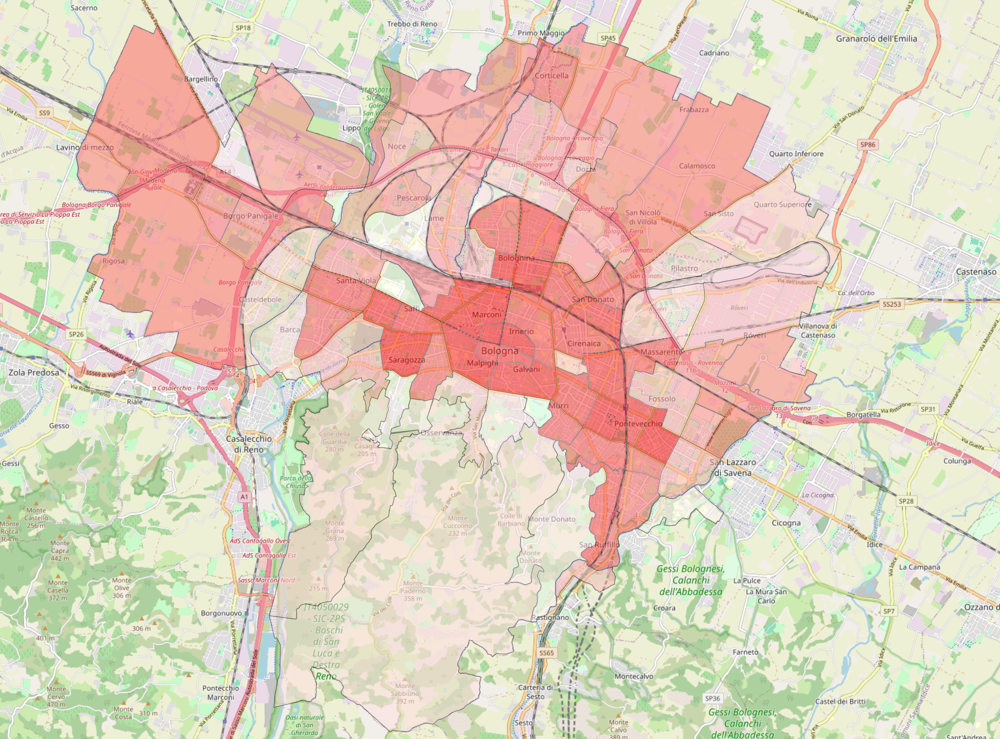
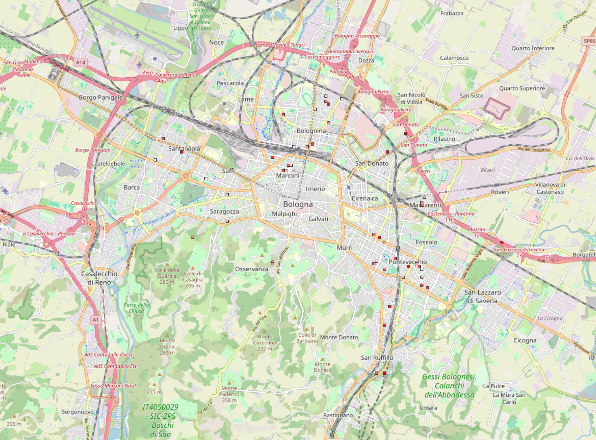
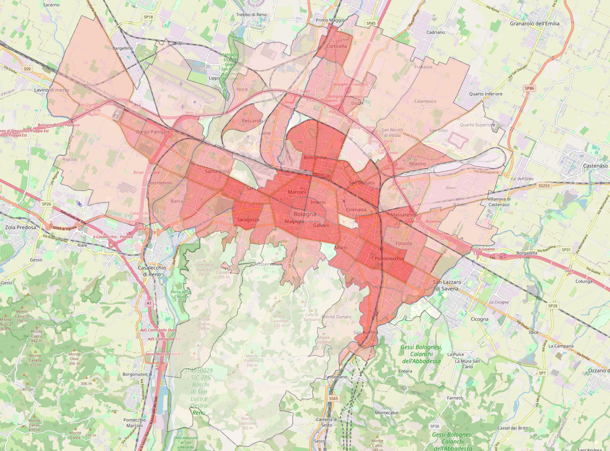
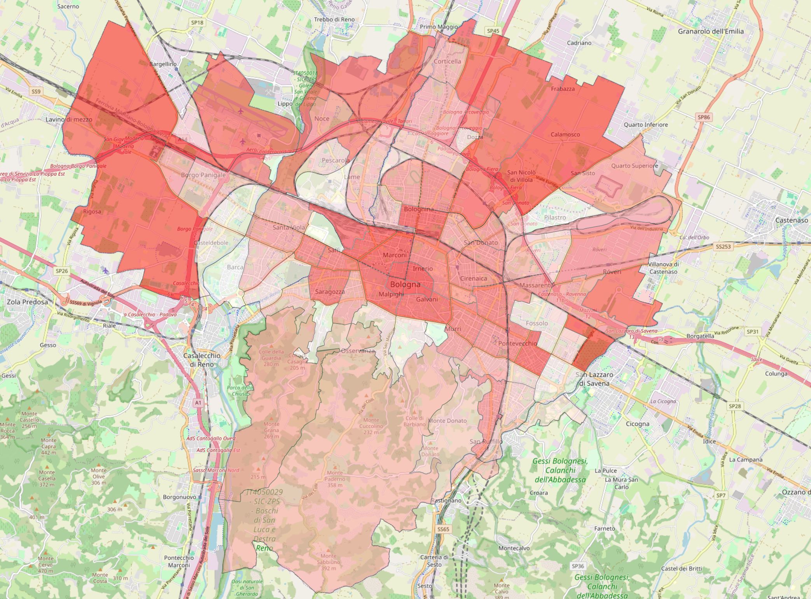
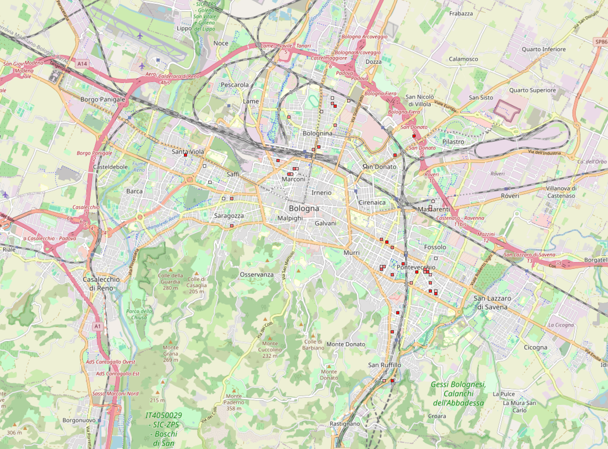
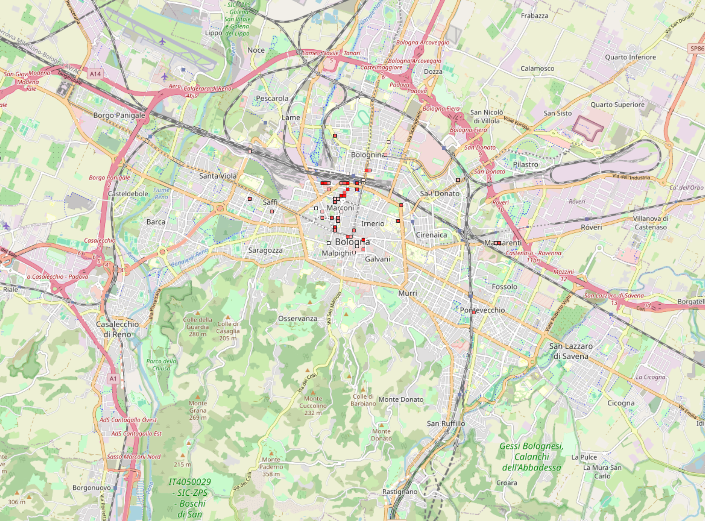
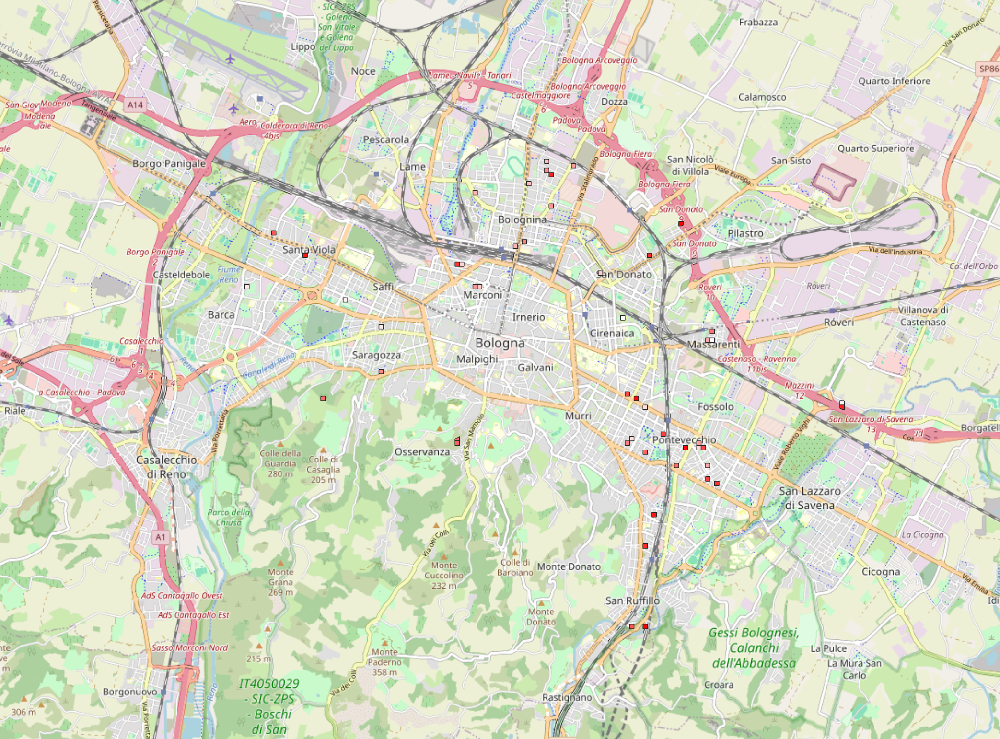

Bologna city hall
In this study also the behavior on the whole city of Bologna have been examined. In this case, the placement of 50 new green cells have been hypothesized. Multiple configurations, as in the case of the city center have been examined.
Default configuration
In the default configuration we set the same parameter as in the city center. Road and yard usage at 20% and 80% respectively, green and density parameter in the macro factor with the same weight.
From the macro factor representation we can see how the city center is the area that has the highest need for the placement of new green cells, so as for “Pontevecchio”, “Bolognina” and “Saragozza”, not a surprise due to the high population density and low green availability. The areas with the lowest need are the peripheral ones.
The results confirm what the macro factor visualization anticipated, most of the cells with the highest utility have been placed in the city center, “Pontevecchio” and “Bolognina”.


Macro factor per each area


Default config, utility graduated
Green enhanced
Increasing the importance of the green in the macro factor results are more or less similar, that’s because the area with the lowest green placement are those with the highest population density.
What slightly change is that the peripheral areas, completely ignored in the default representation are now targeted as possible areas due to the lack of green, like “Borgo Panigale” and “Roveri”.


Macro factor per each area

Green enhanced config, utility graduated
Density enhanced
Opposite to the green enhancement, as it was foreseeable, areas like “Saragozza” and “Pontevecchio” acquires even more importance.


Macro factor per each area


Density enhanced config, utility graduated
No yard
Removing the availability to build on top of yards, results strongly change. It is notable how the majority of the cells are placed in the city center, this can be explained since the city center is highly density populated and has lower amount of green, but it is poor of yard. This implies that majority of the available space is given by the streets.
Macro factor per each area


No yard config, utility graduated
No street
This experiment shows how removing the streets the cells have been placed spread around the city hall, but almost all outside the city center. This confirms what explained before for the “no yard” configuration.
Macro factor per each area


No streets, utility graduated
Conclusion
Of course, in the city hall the cells positioning varies more between the experiments than considering the city center only. We can see how, except for no street configuration, the city center is always designed as the area with the higher need of green. This is also explained by the “macro factor” map visualization, where the city center is always the darker one, since has low green and high population density.
It is important to emphasize that the enhancements to both the green space and population density configurations were made while maintaining a balance between the two factors, as more extreme experiments would yield results that are not applicable to real-world scenarios.